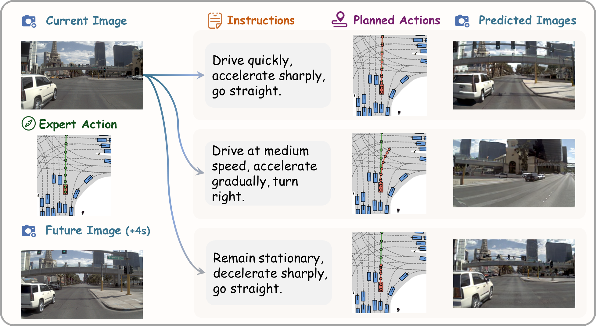
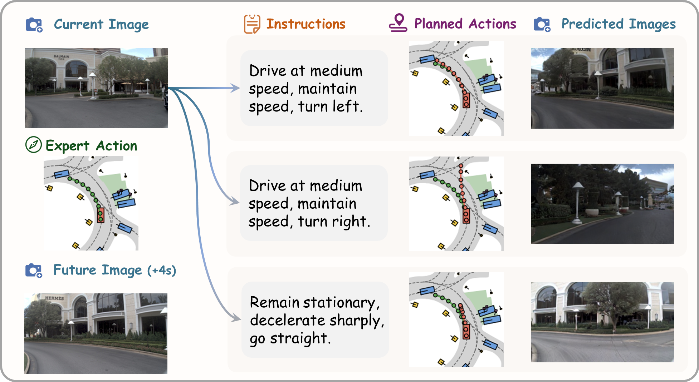
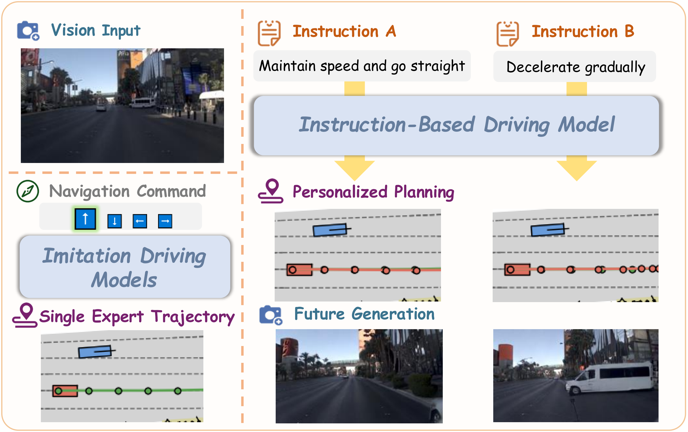
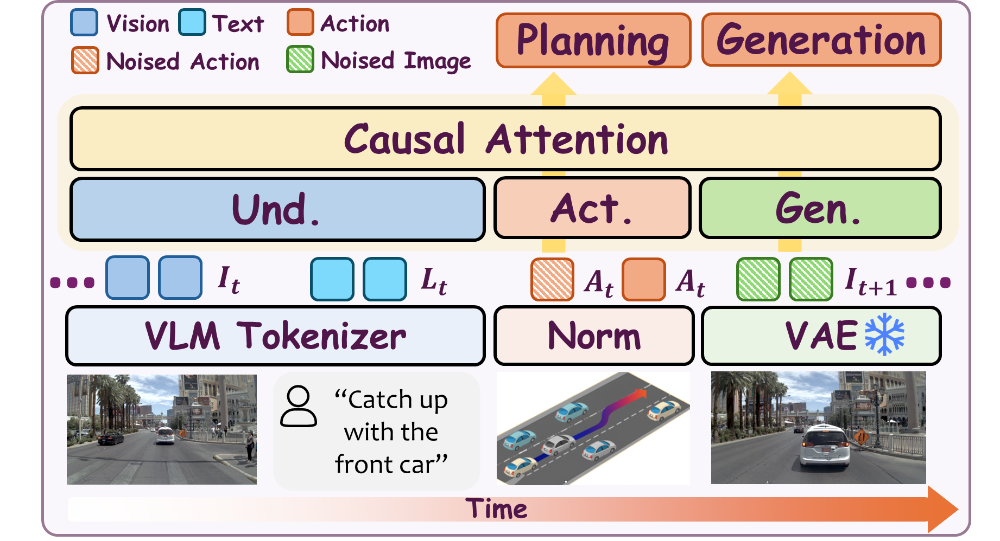
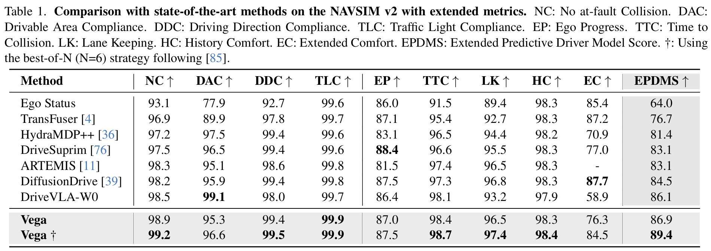
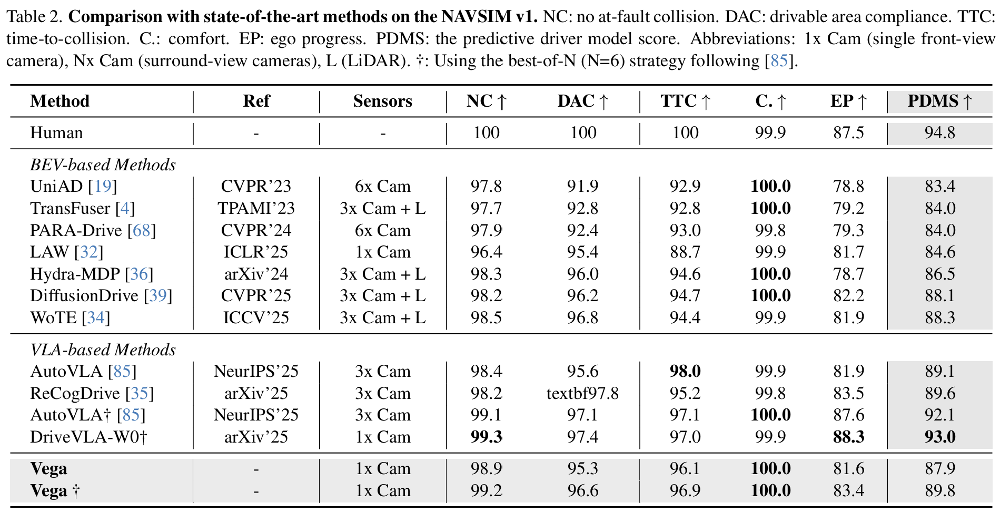

We provide two examples to visualize Vega's instruction-based driving capabilities. We select critical scenes, e.g. approaching the intersection, where there can be multiple possible courses of action. For each scene, the model is given three instructions, predicts corresponding action plans, then generates the resulting future observations. We observe that Vega is able to create action plans that are both scene-aware and instruction-driven. Moreover, it can generate highly realistic images that are consistent with the instructions and actions.


Compared to traditional imitation driving models, which can only predict a single expert trajectory or follow a limited set of navigation commands, Vega can generate multiple action plans and future images that follow diverse user instructions.

Vega adopts a joint autoregressive-diffusion architecture to unify generation and planning. The model employs a Mixture-of-Transformers (MoT) backbone with three separate sets of modules for vision and language understanding, action planning, and world modeling. During inference, it uses Classifier-Free-Guidance Diffusion to generate both action plans and future observations.

Our model demonstrates competitive performance on both NAVSIM benchmarks. On NAVSIM v2, it scores 86.9 EPDMS without any additional performance-enhancing techniques. Using the best-of-N strategy as prior works, it achieves top performance of 89.4 EPDMS on NAVSIM v2. These results suggest that Vega has learned robust instruction following capabilities and benefited from future image prediction training. On NAVSIM v1, our model achieves 87.9 PDMS, matching multi-modal BEV methods, and improves to 89.8 with the best-of-N strategy.


@inproceedings{zuo2026dvgt,
title={Vega: Learning to Drive with Natural Language Instructions},
author={Zuo, Sicheng and Li, Yuxuan and Zheng, Wenzhao and Zhu, Zheng and Zhou, Jie and Lu, Jiwen},
journal={arXiv preprint arXiv:2603.xxxxx},
year={2026}
}